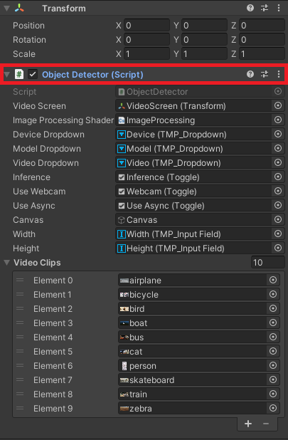
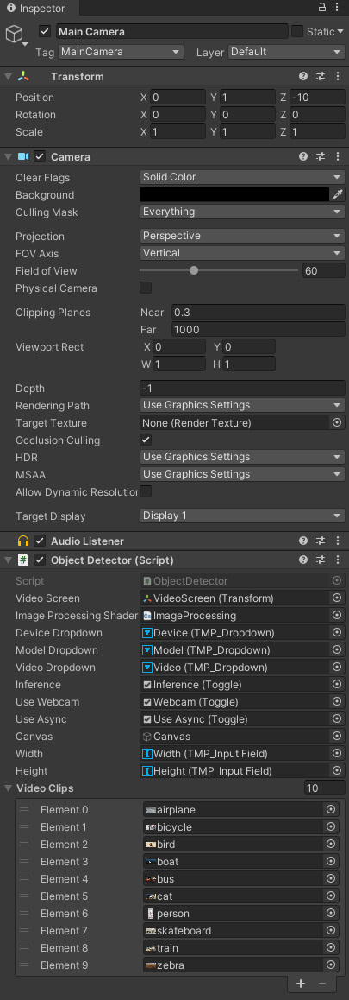
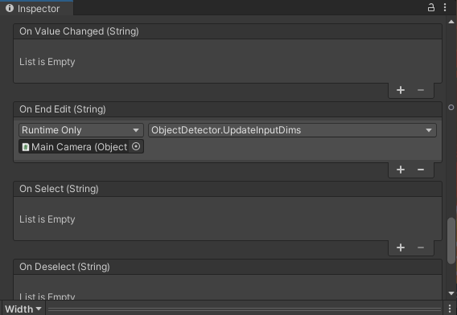

OpenVINO Object Detection in Unity Using the In-Game Camera
Previous: In-Editor
Overview
In this follow-up post, we will update the Unity code so that we can use the in-game camera as input for the YOLOX model. This can be useful for performing object detection on the in-game environment as shown below.

The baseline models used in this series were trained exclusively on real-world images. While the larger model variants are somewhat accurate in video game environments, they would need to be trained on images similar to the target game environment to maintain reliable accuracy. Therefore, we will be sticking with the demo project that has been used so far in this tutorial series.
Update BoundingBox Script
Open the BoundingBox script in the code editor.
Delete the LineRenderer
We need to update how the bounding box is created so that the bounding boxes are not included in the current camera frame. Otherwise, the bounding box will be included in the input images to the model, reducing the models accuracy. This means we can no longer use the LineRenderer component.
Add New Public Properties
We need to add a few new public properties that will be accessed in the ObjectDetector script.
- renderBox: Indicates whether to render the bounding box on screen
- boxRect: The bounding box defined in GUI space
- boxTex: The texture used for rendering the bounding box on screen
// Indicates whether to render the bounding box on screen
public bool renderBox = false;
// The bounding box
public Rect boxRect = new Rect();
// The texture used for rendering the bounding box on screen
public Texture2D boxTex = Texture2D.whiteTexture;Also, set the color and lineWidth variables to public.
// The object class color
public Color color;// The adjusted line width for the bounding box
public int lineWidth = (int)(Screen.width * 1.75e-3);Update ToggleBBox Method
We need to update the value for renderBox inside the ToggleBox method.
/// <summary>
/// Toggle the visibility for the bounding box
/// </summary>
/// <param name="show"></param>
public void ToggleBBox(bool show)
{
renderBox = show;
bbox.SetActive(show);
text.SetActive(show);
}Update InitializeLabel Method
Since we are already working in screen space, we no longer need to convert from world to screen coordinates.
/// <summary>
/// Initialize the label for the bounding box
/// </summary>
/// <param name="label"></param>
private void InitializeLabel()
{
// Set the label text
textContent.text = $"{text.name}: {(info.prob * 100).ToString("0.##")}%";
// Set the text color
textContent.color = color;
// Set the text alignment
textContent.alignment = TextAlignmentOptions.MidlineLeft;
// Set the font size
textContent.fontSize = fontSize;
// Resize the text area
RectTransform rectTransform = text.GetComponent<RectTransform>();
rectTransform.sizeDelta = new Vector2(250, 50);
// Position the label above the top left corner of the bounding box
Vector3 textPos = new Vector3(info.x0, info.y0, -10f);
float xOffset = rectTransform.rect.width / 2;
textPos = new Vector3(textPos.x + xOffset, textPos.y + textContent.fontSize, textPos.z);
text.transform.position = textPos;
}Update InitializeBBox Method
Since we are not using a LineRenderer, we just need to update the boxRect variable with the new starting position and dimensions.
/// <summary>
/// Initialize the position and dimensions for the bounding box
/// </summary>
private void InitializeBBox()
{
// Set the position and dimensions
boxRect = new Rect(info.x0, Screen.height - info.y0, info.width, info.height);
// Make sure the bounding box is rendered
ToggleBBox(true);
}Update the Constructor
Lastly, we need to remove any references to the lineRenderer variable.
/// <summary>
/// Constructor for the bounding box
/// </summary>
/// <param name="objectInfo"></param>
public BoundingBox(Utils.Object objectInfo)
{
// Add a text componenet to store the label text
textContent = text.AddComponent<TextMeshProUGUI>();
// Assign text object to the label canvas
text.transform.SetParent(canvas.transform);
// Update the object info for the bounding box
SetObjectInfo(objectInfo);
}Update ObjectDetector Script
Next, open the ObjectDetector script. We don’t need to add any new variables for this script.
Update InitializeTextures Method
Since we are receiving input from the current Camera frame, we need to initialize the textures using the screen dimensions instead of the videoTexture dimensions.
/// <summary>
/// Calculate the dimensions for the input image
/// </summary>
/// <param name="newVideo"></param>
private void InitializeTextures(bool newVideo = false)
{
// Adjust the input dimensions to maintain the current aspect ratio
if (imageDims.x != targetDims.x)
{
imageDims.x = targetDims.x;
aspectRatioScale = (float)Screen.height / Screen.width;
imageDims.y = (int)(targetDims.x * aspectRatioScale);
targetDims.y = imageDims.y;
}
if (imageDims.y != targetDims.y)
{
imageDims.y = targetDims.y;
aspectRatioScale = (float)Screen.width / Screen.height;
imageDims.x = (int)(targetDims.y * aspectRatioScale);
targetDims.x = imageDims.x;
}
// Initialize the RenderTexture that will store the processed input image
rTex = RenderTexture.GetTemporary(imageDims.x, imageDims.y, 24, RenderTextureFormat.ARGB32);
// Update inputTex with the new dimensions
inputTex = new Texture2D(imageDims.x, imageDims.y, TextureFormat.RGBA32, false);
// Update the values for the width and height input fields
Debug.Log($"Setting Input Dims to W: {imageDims.x} x H: {imageDims.y}");
width.text = $"{imageDims.x}";
height.text = $"{imageDims.y}";
}Modify UpdateBoundingBoxes Method
Likewise, in the UpdateBoundingBoxes method we now need to determine the value for minDimension using the screen dimensions instead of videoTexture.
/// <summary>
/// Update the list of bounding boxes based on the latest output from the model
/// </summary>
private void UpdateBoundingBoxes()
{
// Process new detected objects
for (int i = 0; i < objectInfoArray.Length; i++)
{
// The smallest dimension of the screen
int minDimension = Mathf.Min(Screen.width, Screen.height);
// The value used to scale the bbox locations up to the source resolution
float scale = (float)minDimension / Mathf.Min(imageDims.x, imageDims.y);
// Flip the bbox coordinates vertically
objectInfoArray[i].y0 = rTex.height - objectInfoArray[i].y0;
objectInfoArray[i].x0 *= scale;
objectInfoArray[i].y0 *= scale;
objectInfoArray[i].width *= scale;
objectInfoArray[i].height *= scale;
// Update bounding box list with new object info
try
{
boundingBoxes[i].SetObjectInfo(objectInfoArray[i]);
}
catch
{
// Add a new bounding box object when needed
boundingBoxes.Add(new BoundingBox(objectInfoArray[i]));
}
}
// Turn off extra bounding boxes
for (int i = 0; i < boundingBoxes.Count; i++)
{
if (i > objectInfoArray.Length - 1)
{
boundingBoxes[i].ToggleBBox(false);
}
}
}Modify Update Method
We will be moving most of the code in the Update() method to the OnRenderImage() method.
// Update is called once per frame
void Update()
{
// Toggle the user interface
if (Input.GetKeyDown("space"))
{
canvas.SetActive(!canvas.activeInHierarchy);
}
// Copy webcamTexture to videoTexture if using webcam
if (useWebcam.isOn) Graphics.Blit(webcamTexture, videoTexture);
}Define OnRenderImage Method
Instead of copying the contents of videoTexture to rTex, we will copy the contents of the current camera frame. We will not be modifying the source texture, so we can copy it directly to the destination texture.
public void OnRenderImage(RenderTexture source, RenderTexture destination)
{
if (performInference == true)
{
// Copy the source texture to the rTex RenderTexture
Graphics.Blit(source, rTex);
// Flip image before sending to DLL
FlipImage(rTex, "FlipXAxis");
// Download pixel data from GPU to CPU
if (useAsync.isOn)
{
AsyncGPUReadback.Request(rTex, 0, TextureFormat.RGBA32, OnCompleteReadback);
}
else
{
RenderTexture.active = rTex;
inputTex.ReadPixels(new Rect(0, 0, rTex.width, rTex.height), 0, 0);
inputTex.Apply();
}
// Send reference to inputData to DLL
UploadTexture(inputTex.GetRawTextureData());
// Update bounding boxes with new object info
UpdateBoundingBoxes();
}
Graphics.Blit(source, destination);
}Define OnGUI Method
We will render all the bounding boxes using the GUI.DrawTexture method. This method can only be called in the OnGUI method. When calling GUI.DrawTexture(), will pass in the boxRect, boxTex, color, and lineWidth properties for the current bounding box.
public void OnGUI()
{
if (performInference == false) return;
foreach (BoundingBox boundingBox in boundingBoxes)
{
if (boundingBox.renderBox)
{
GUI.DrawTexture(boundingBox.boxRect, boundingBox.boxTex, ScaleMode.StretchToFill, true, 0, boundingBox.color, 3, boundingBox.lineWidth);
}
}
}Attach Script to Camera
Now we need to attach the ObjectDetector script to the main camera, so we can use the OnRenderImage() method. Select the Object Detector object in the Hierarchy tab. In the Inspector tab, click and hold on the Object Detector (Script) component.

Then, drag and drop the component onto the Main Camera object in the Hierarchy tab. The component should now be attached to the Main Camera object.

We can delete the Object Detector object, as it will not be used anymore.
Update GUI Events
Lastly, we need to reassign all the GUI events as show here. This time, we drag and drop the Main Camera object from the Hierarchy tab.

Test it Out
If we run the project now, the results should be basically the same.
Project Resources: